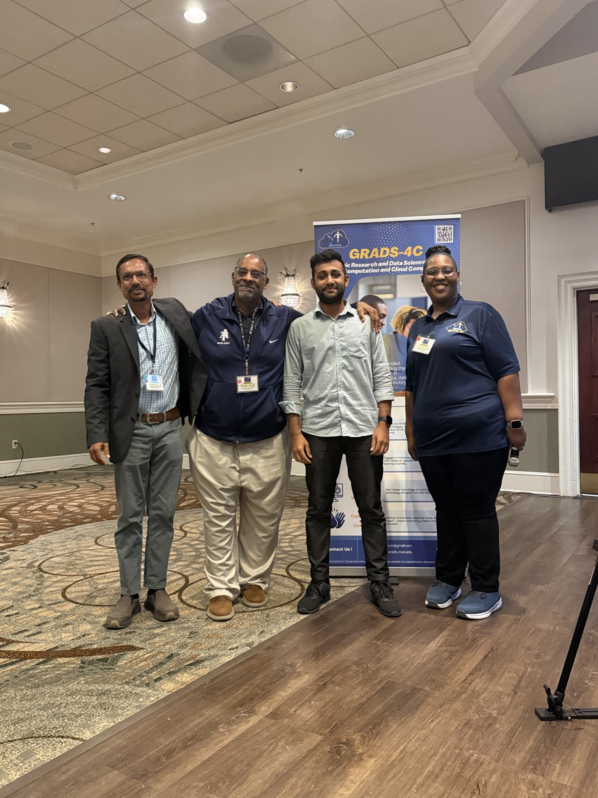
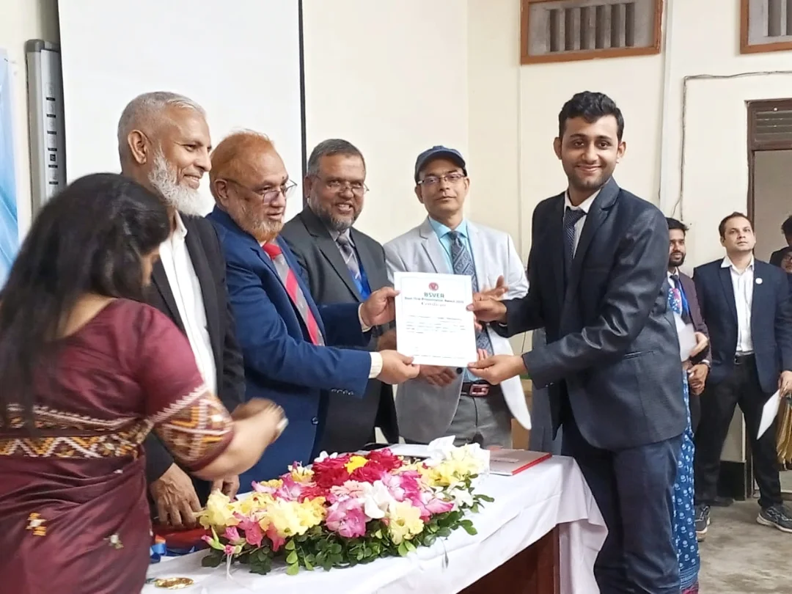
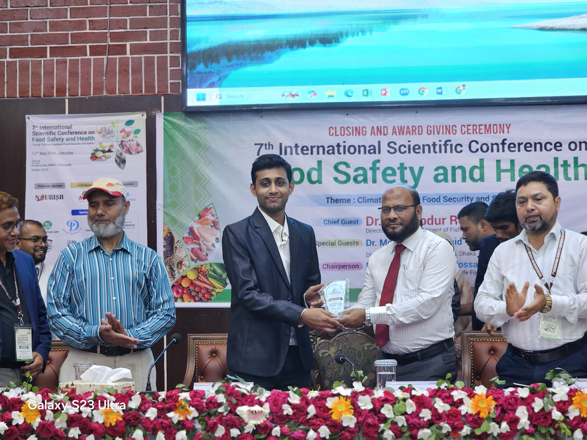
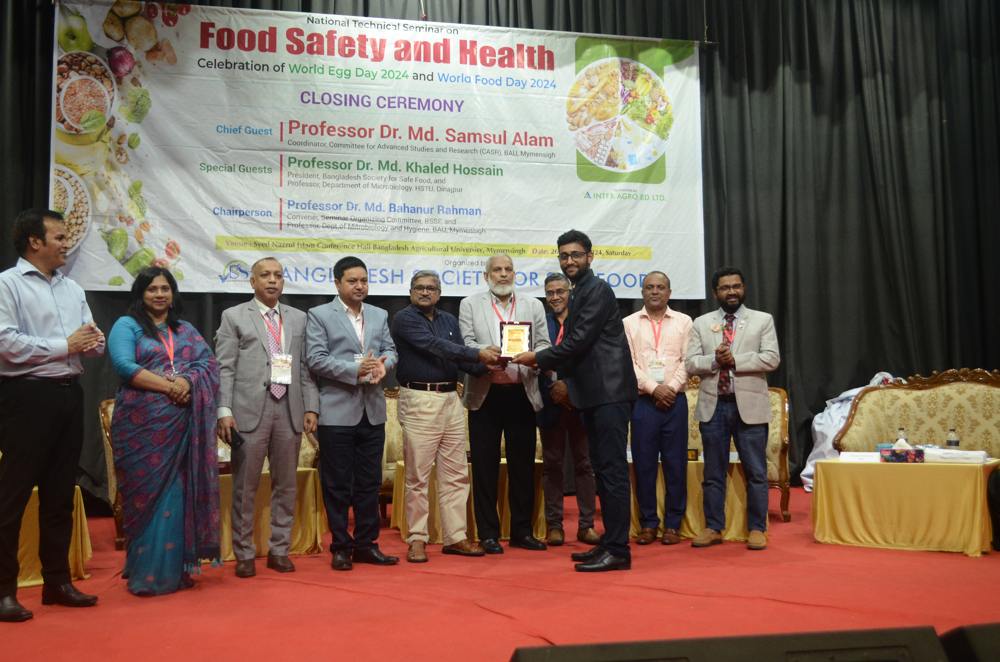
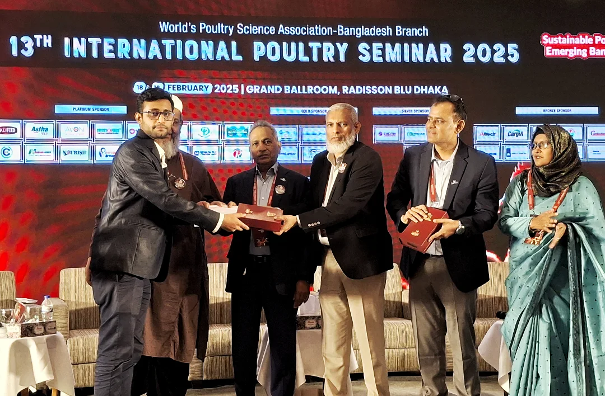
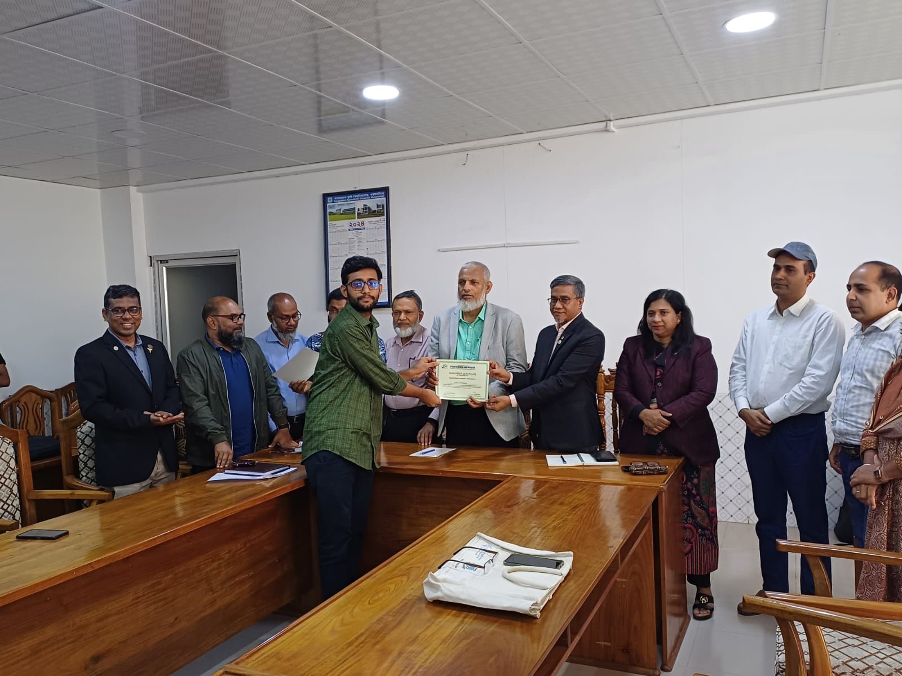
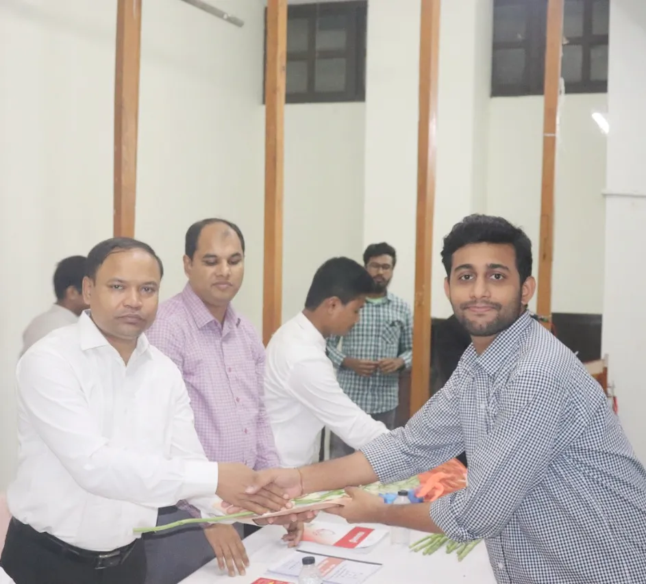

Awards & Honors
Recognition of research, academic achievement, and scientific engagement.
-

2026 Best Poster, 1st Place Cloud Computing Education in Data Science, Genomics and Health Symposium -

2025 Best Oral Presenter 31st BSVER -

2025 Best Oral Presenter 7th International Scientific Conference on Food Safety and Health -

2025 Best Poster Presenter National Technical Seminar on Food Safety and Health -

2025 Poster Presenter 31st International Poultry Seminar -

2025 Volunteer National Technical Seminar on Food Safety and Health -
2024 National Science and Technology Fellowship Bangladesh
-
2024 Best Poster Presenter, 1st Position National Conference on Food Safety and Health
-
2023 Best Poster, 3rd Position 11th One Health Bangladesh Conference
-

2023 Recognition for Blood Donor Volunteer Badhan, Bangladesh Agricultural University